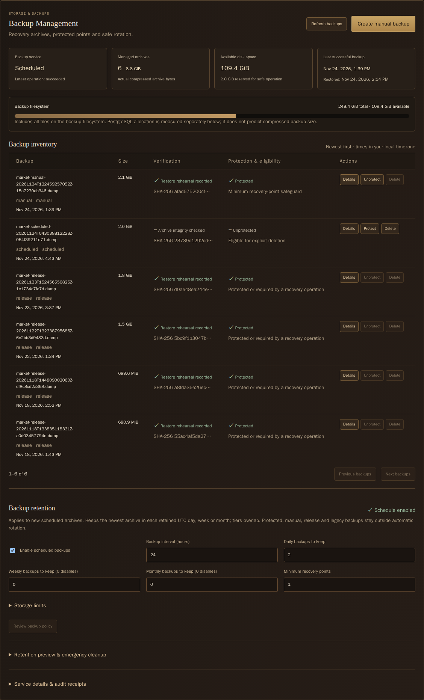
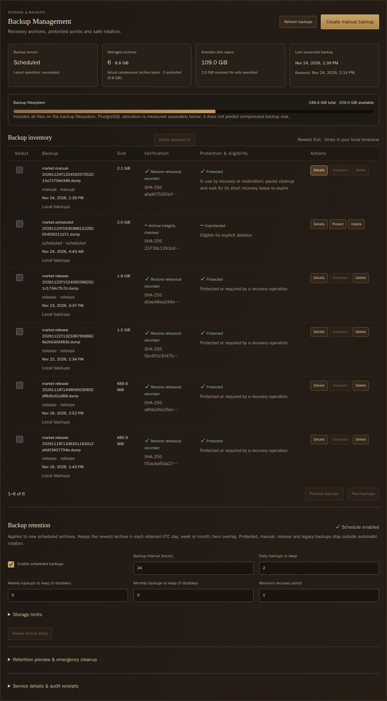
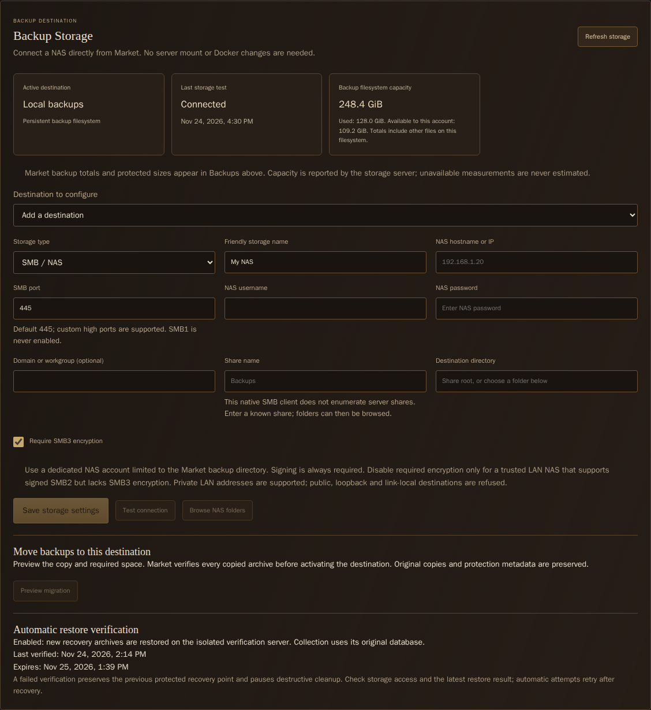
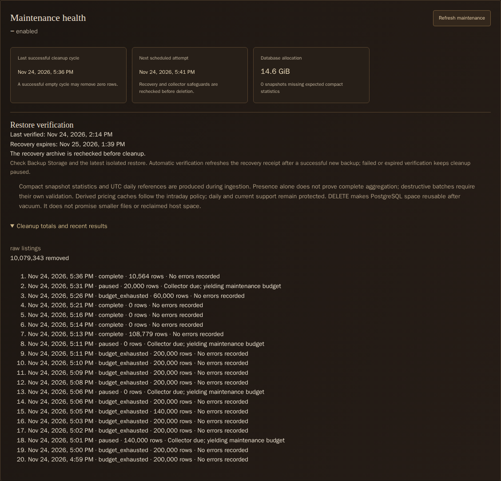
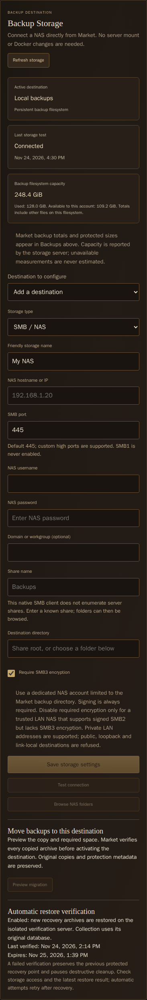
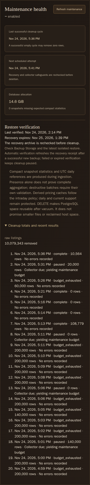

Actual production administration
These screenshots come from authenticated production HTTPS. Local storage remains active; no real NAS credentials, production migration or archive deletion were used. The baseline backup image precedes deployment; the other images show the verified release. Connected NAS, migration and protected-deletion fixture gallery uses synthetic data on real isolated SMB.
Before deployment: backup administration
Open full resolution
Deployed backup inventory and protection
Open full resolution
Deployed browser storage configuration, Local active
Open full resolution
Verified automatic maintenance and cleanup totals
Open full resolution
Storage configuration on mobile
Open full resolution
Maintenance and restore status on mobile
Open full resolution